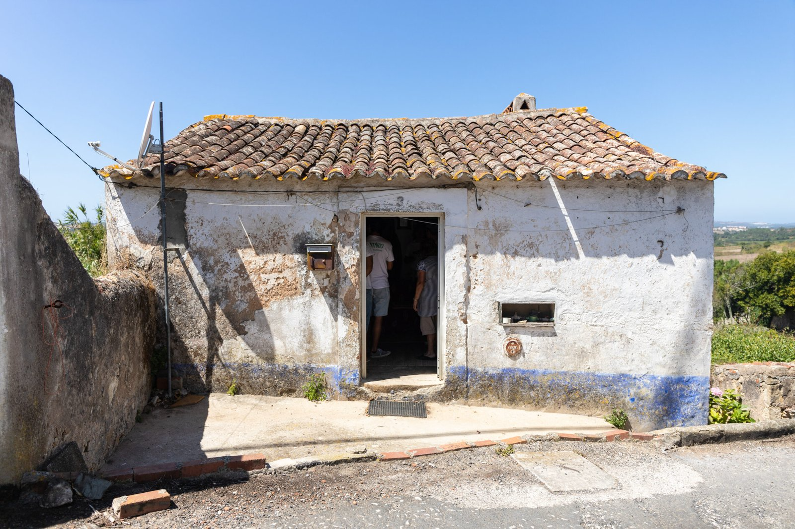
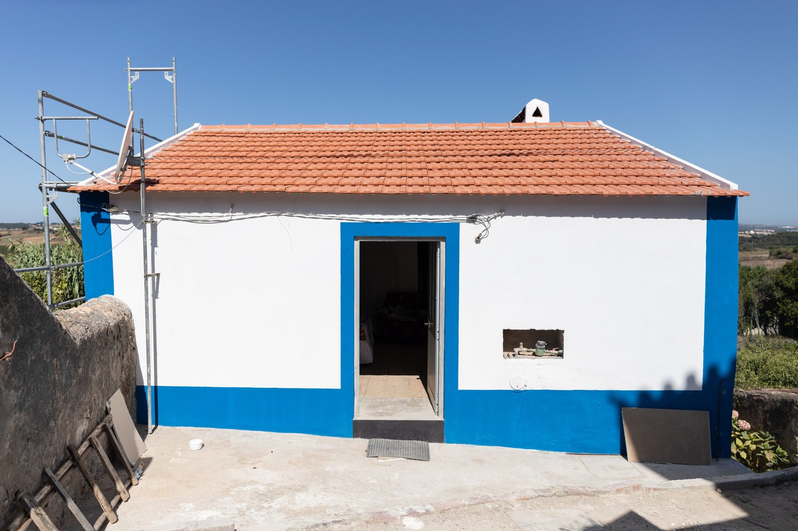
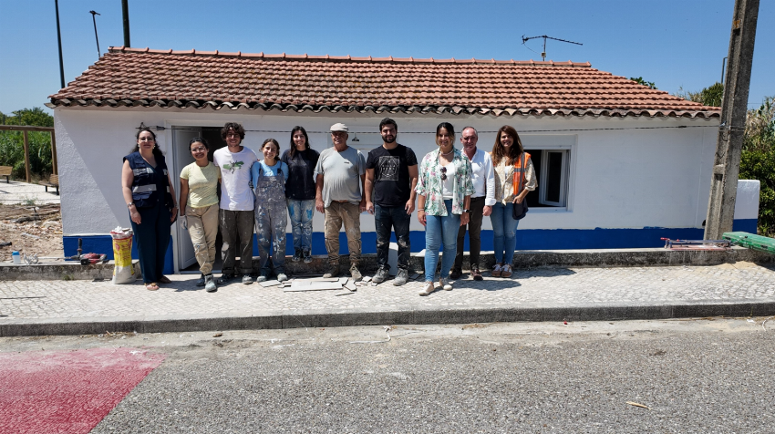

Sobre a Campanha
A Mãos à Obra 2025 é uma iniciativa da Just a Change que une voluntários,
comunidades e empresas para reabilitar casas de pessoas que vivem em condições precárias. Cada parede
reconstruída representa uma nova oportunidade de recomeço.
O Problema
Milhares de famílias em Portugal vivem em habitações degradadas, sem condições de conforto ou segurança.
A reabilitação não é apenas construção — é dignidade, é esperança.
+2M
Casas com problemas estruturais
10%
Famílias em precariedade habitacional
1 Casa
Transforma uma vida
Impacto Real
Desde 2010, a Just a Change já reabilitou mais de 700 casas e mudou a vida de milhares de pessoas. Com a tua
ajuda, queremos chegar ainda mais longe em 2025.


